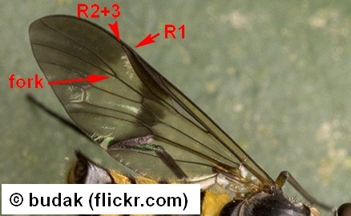
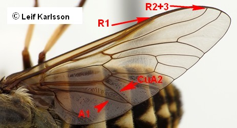
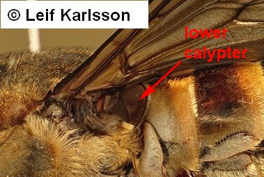
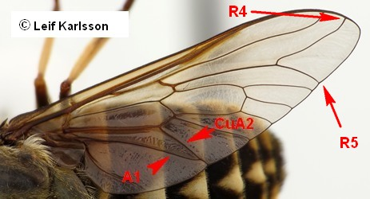
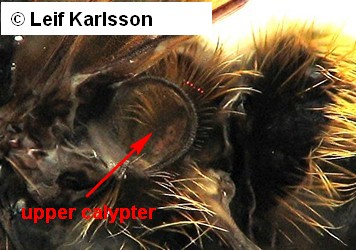
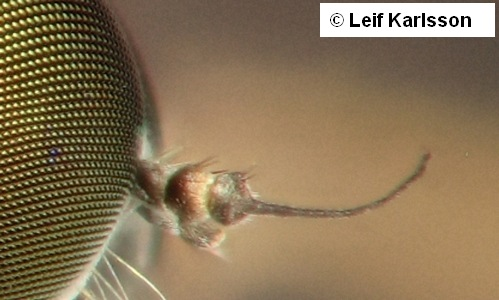
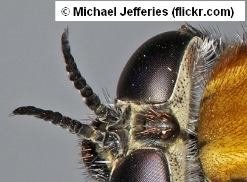

Key to superfamilies of Tabanomorpha
1.
- Vein R1 and R2+3 ending together in costa (Fig. 2.29.1). First flagellomere "kidney-shaped".

Tabanoidea
Athericidae
- Vein R1 and R2+3 ending in costa separately. First flagellomere not "kidney-shaped" (or very rarely so, e.g., Symphoromyia, Rhagionidae).

2
- Lower calypter strongly developed, much larger than alar (upper) calypter. Subscutellum large. Veins R4 and R5 divergent, the former ending before, the latter far behind tip of wing.

Tabanoidea
Tabanidae
- Thoracic (lower) calypter not enlarged, other characteristics different.

3
- Distal segments of flagellum definitely thinner than first flagellomere. That stylus (or "arista") always consists of fewer than 6 segments, which may be fused with each other and the first flagellomere in numerous cases. Subscutellum not developed, palpus two-segmented (Ch. 2.28).

Rhagionoidea
Rhagionidae
- Distal segments of flagellum less different from the first flagellomere, and the stylus consists of 7 to 8 segments. If distal segments form an arista (Dialysis), palpus one-segmented. Development of subscutellum variable.

Tabanoidea
Pelecorhynchidae